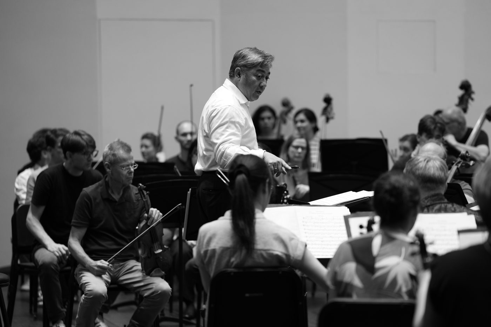
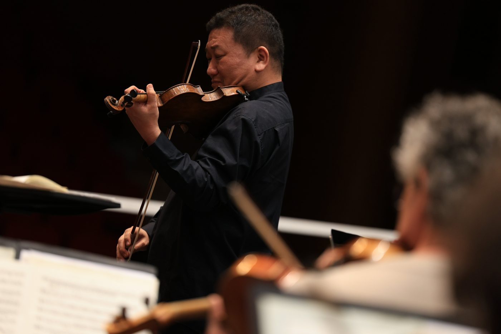
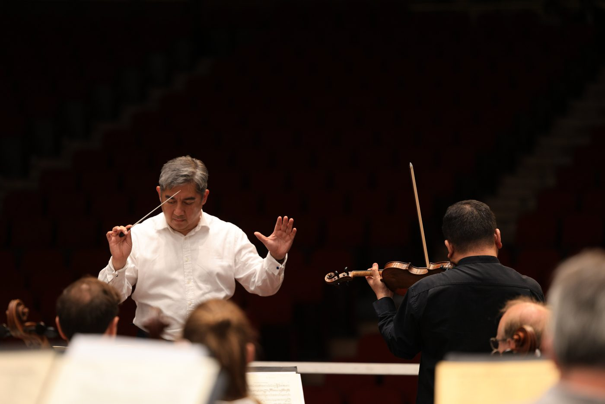

Daejeon — The Stuttgart Philharmonic arrived carrying a century of German orchestral habit, and chose to spend the entire evening on one composer. An all-Beethoven programme is not a modest gesture. It is an orchestra saying: judge us on the repertoire we cannot hide behind.
Founded in 1924, the orchestra opened with the Coriolan Overture, Op. 62 — a piece that gives an ensemble nowhere to warm up. The strings answered with a sound that was dense rather than glossy, and the drama arrived without being pushed. Within four minutes the hall knew what kind of playing it was going to hear.

The Concerto, played as a question
Then came the reason most of the audience was there. Edwin E.S. Kim walked out for Beethoven's Violin Concerto in D major, Op. 61, and immediately declined the easier version of the piece. There is a way to play this concerto that treats the long first movement as a display case. Kim treated it as an argument he was still working through.
The opening was patient to the point of risk. He let phrases breathe past the point where a more anxious soloist would have moved on, and the orchestra — this is the interesting part — went with him rather than covering for him. The Larghetto was where the reading justified itself: a stillness that felt less like restraint than like listening. The finale, when it came, had energy without hurry.

It is worth saying why this matters beyond one good evening. Kim has spent two decades building the kind of career that does not announce itself: soloist appearances with the Prague Philharmonic, the Prague Radio Symphony, the Regensburg Philharmonic, the Göttingen Symphony, the Korean Symphony and the KBS Symphony. He has been a regular guest at the Smetana Litomyšl Festival, and his performances with Leoš Svárovský once drew fifteen curtain calls. From 2012 to 2019 he directed the Lech Classic Music Festival in Austria; he now leads Camerata SOL.
His projects have been stranger and more useful than most: a complete Four Seasons setting Vivaldi against Piazzolla and Richter, the full cycle of Mozart's violin concertos, and the series he calls The Aesthetics of Humility. His recordings — Sehnsucht, Das Leben, Mein Wiener Herz — read as a working notebook rather than a portfolio. Das Leben went to No. 1 on the classical chart on release.
"Kim is an artist of extraordinary technical mastery, but more importantly, he is a musician who understands the essence of music. Beethoven's Violin Concerto demands far more than beauty of sound."
Adrian Prabava, conductor
The Fourth, and what the orchestra is for
After the interval, Beethoven's Symphony No. 4 in B-flat major, Op. 60 — the symphony that gets called the quiet one, wedged between the Eroica and the Fifth. It suited them. The warmth in the strings, the woodwind colouring that stayed inside the ensemble rather than stepping out of it, the way the whole thing cohered without being drilled: this is what a hundred years of playing together buys you.
Prabava afterwards called the orchestra's first Korean visit a meaningful one, and said he hoped to return. That is the expected line. What was less expected was the evening's actual achievement: not a display of German pedigree, and not a soloist's showcase, but a conversation between the two that neither side tried to win.